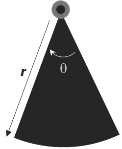
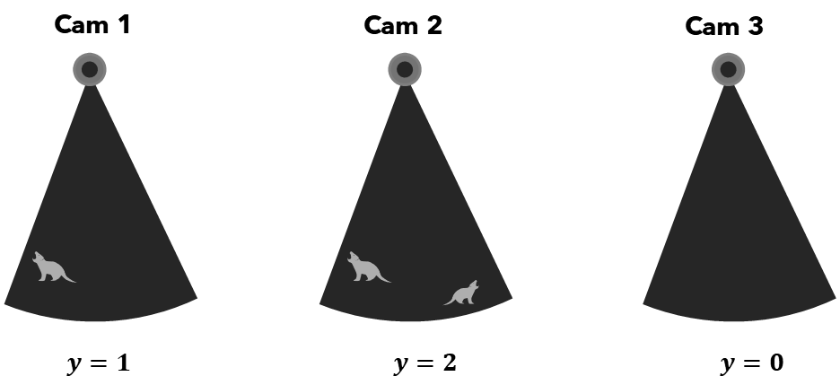
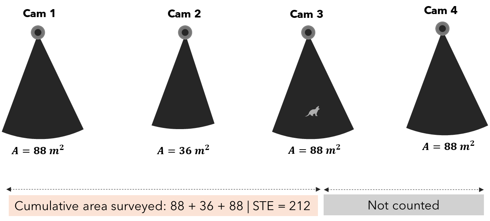
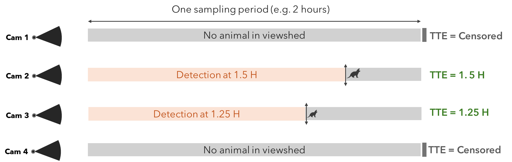

Estimating Wildlife Abundance from Camera Traps With SpaceNTime Methods
2026-06-21
Source:vignettes/articles/spaceNtime.Rmd
spaceNtime.RmdWhy this matters
Every wildlife manager, ecologist, and conservation biologist eventually faces the same stubborn question: how many animals are out there? Classic approaches (mark-recapture, distance sampling, N-mixture models) carry real-world prerequisites that can be difficult or impossible to meet. Many require that individual animals be reliably identified across encounters, which rules out species where individuals look alike, or study areas too vast for comprehensive marking efforts.
Camera traps changed the game. Deploy enough of them across a landscape and you amass an archive of animal detections. But raw detection counts are not abundance estimates. They are a tangled function of animal density, movement, behaviour, and camera placement. Turning counts into density requires a model.
SpaceNTime is a family of three such models introduced by Moeller, Lukacs, and Horne (2018). Their key insight: by framing camera-trap detections as spatial or temporal random processes, animal density can be estimated from nothing more than camera identifiers, image timestamps, and per-detection animal counts.
This tutorial walks through the theory behind the three SpaceNTime
estimators — Space-To-Event (STE),
Time-To-Event (TTE), and Instantaneous Sampling
Estimator (ISE) — and shows how to apply all three using the
ct package in a clean, fully automated workflow.
The theory of SpaceNTime
Cameras as random samplers
Imagine scattering cameras randomly across a forest. Each camera watches a small patch called viewshed; area \(A_i\) (in m², ha, or whatever unit your study uses). The viewshed of each camera is approximated as a circular sector of radius \(r\) (the maximum detection distance, in metres) and angle \(\theta\) (the horizontal field of view, in degrees):
\[A = \frac{\pi r^2 \theta}{360}\]
where \(A\) is the viewshed area in m², \(r\) is the detection radius, and \(\theta\) is the camera’s field-of-view angle.

Figure 1: Schematic representation of a camera trap detection zone, showing the radial detection distance (r) and detection angle (θ) that define the camera’s viewshed area (also called field of view)
The value of \(r\) and \(\theta\) are generally specified by the camera manufacturer. At any given moment, an animal is either inside that viewshed or it is not. Over time, animals wander in and out as they move through the landscape.
The SpaceNTime framework treats each camera’s viewshed as an independent sampler of the landscape, and exploits the geometry and timing of animal encounters to infer density. The three estimators do this differently.
1. Instantaneous Sampling Estimator (ISE)
The ISE is the most conceptually straightforward of the three. At a set of predetermined moments in time — think of them as camera “snapshots” — the observer asks: is an animal inside this viewshed right now? Each snapshot yields a count \(y_{ij}\) for camera \(i\) at occasion \(j\).
The estimator recognises that:
\[\hat{D} = \frac{1}{MK} \sum_{i=1}^{M} \sum_{j=1}^{K} \frac{y_{ij}}{A_{ij}}\]
where \(M\) is the number of cameras, \(K\) is the number of sampling occasions, and \(A_{ij}\) is the viewshed area of camera \(i\) at occasion \(j\). This is essentially a ratio estimator of density: animals per unit area. Multiplied by the total study area, it gives \(\hat{N}\).

Figure 2: Instantaneous Sampling (ISE). At a fixed snapshot moment, each camera reports a count of animals in its viewshed. Cameras with larger viewsheds contribute more area to the denominator. The density estimate is the mean count-per-unit-area across all cameras and occasions.
The ISE is analogous to a point count in avian surveys. Its limitation is that it only counts animals inside the viewshed at the exact sampling moment, so it needs enough occasions and cameras to produce a reliable mean.
2. Space-To-Event (STE)
The STE estimator is inspired by distance sampling, but turns the spatial axis sideways. Instead of asking “how far away was the animal?”, it asks: “how much camera viewshed area did we have to survey before we detected the first animal?”
On each sampling occasion, cameras are conceptually ordered in a random sequence. We accumulate viewshed area until the first animal is detected. The cumulative area at that first detection, i.e space-to-event is the key statistic. If animals are rare, we expect to accumulate a lot of area before seeing one. If animals are dense, the first encounter comes quickly.
Formally, the STE values are modelled as an exponential distribution with rate parameter \(\lambda\) (density), which is estimated via maximum likelihood. The result is a density estimate that explicitly accounts for how much habitat was surveyed.

Figure 3: Space-To-Event (STE). Cameras are placed in a random order. Viewshed areas are accumulated until the first animal is detected. The total accumulated area at that point is the Space-To-Event value (here 212 m² here) and representes the key statistic. Cameras after the first detection (crossed out) contribute nothing to the current occasion. Across many occasions, STE values are modelled as an exponential distribution to estimate density.
STE values across all occasions are modelled as Exp(λ), where λ = density (animals per m²). High density → small STE values and Low density → large STE values. λ is estimated by maximum likelihood. Abundance: N̂ = λ̂ × study area. The STE estimator is particularly valuable when animal activity within a sampling period is sparse — a single detection per occasion is all it needs.
3. Time-To-Event (TTE)
The TTE estimator applies the same exponential-distribution logic to the temporal axis. Instead of measuring area-to-first-detection, it measures time-to-first-detection within each sampling period.
Each camera is activated for a short sampling period. The clock starts. The question is: how long does it take for the first animal to enter the viewshed? If animals are dense and moving, the wait is short. If animals are sparse, the wait is long.

Figure 4: The clock starts when the sampling period opens. Camera 2 detects an animal at 1.5 hours and Camera 2 at 1.25 hours — that’s the TTE. Camera 1 et 4 detect nothing; the TTE is censored at the end of the period and contributes to the likelihood differently. Both observed and censored times are used in the exponential Maximum Likelihood Estimate.
A censored observation corresponds to a camera-trap site where the target species was not detected before the end of the sampling period. It does not mean zero detection. The true detection time is longer than the observed time, but we do not know exactly how much longer. These cameras were treated as right-censored observations.
The TTE requires knowledge of viewshed transit time (\(\tau\)), the mean time for an animal to cross the camera viewshed. It is essentially a function of viewshed size and typical animal movement speed. Given \(\tau\), the rate of encounter can be linked directly to animal density. For an animal with a movement speed of 30 m/hr passing through camera viewsheds of 300 m², 400 m², and 380 m², the \(\tau\) or (sampling period can be approximated as):
\[{\tau} = {\frac{\sqrt{\frac{1}{n}\sum_{i=1}^{n} A_i}}{30/3600}}\]
where represents the camera viewshed areas (in m²) and is the number of cameras. The denominator is the animal speed converted from meters/hour to meters/second. TTE values ≤ \(\tau\) are scaled by area.
Like STE, TTE values are modelled with an exponential distribution and estimated via maximum likelihood. It is well-suited to studies where animal movement is relatively well characterised and multiple independent sampling periods can be conducted.
A note on assumptions
All three estimators share some important assumptions:
- Random camera placement (or at minimum, placement that is not correlated with animal density)
- Animals move independently of one another and at random relative to camera positions
- Closed population within the sampling window (no births, deaths, or large-scale immigration/emigration)
- No attraction to or avoidance of cameras
Violations of these assumptions can bias estimates, just as they would in any wildlife sampling framework. The SpaceNTime methods, however, are notably robust to heterogeneity in detection probability.
The ct package
The original spaceNtime R package (Moeller & Lukacs
2021) implemented these estimators as a series of lower-level building
blocks: helper functions to build sampling occasions, construct
encounter histories, and then pass the results to estimation functions.
While powerful, this design placed a heavy burden on the user: each step
had to be called explicitly, outputs had to be connected manually.
The ct package wraps the full SpaceNTime pipeline into
three high-level, production-quality functions:
| Function | Method | Description |
|---|---|---|
ct_fit_ste() |
Space-To-Event | Area-to-first-detection estimator |
ct_fit_tte() |
Time-To-Event | Time-to-first-detection estimator |
ct_fit_ise() |
Instantaneous Sampling | Point-in-time snapshot estimator |
What’s improved
Every ct_fit_*() function builds its own occasions and
encounter history internally, in a single call. Before any computation
begins, your data and deployment tables are rigorously validated: column
types, timezone consistency, camera-deployment alignment, temporal
coverage, and more. If something is wrong, you get an error that tells
you exactly what to fix. Each function emits structured progress
messages, so you can follow where the computation is as it runs.
Function arguments are named for readability.
A worked example
Data preparation
The example below uses camera-trap data from Gandaho et al. (2026), a study on habitat loss and species diel ecology in a West African community wetland reserve. The raw export is a CSV where each row is one image, with EXIF metadata (camera model, date, time) and observer-recorded fields (species, count, station).
The preparation script below reads that CSV and produces the two
tables the ct_fit_*() functions expect:
-
data— one row per detection event, with columnscam,datetime, andcount. -
deployment_data— one row per camera deployment period, with columnscam,start,end, andarea.
Using your own data. You do not need to follow this exact workflow. Any processing pipeline is fine as long as the two output tables contain those required columns with the correct types (
camcan be any consistent type;datetime,start, andendmust bePOSIXctwith a matching timezone;countandareamust be numeric).
library(dplyr)
library(ct)
# 1. Detection data
# Source: Gandaho et al. (2026), https://doi.org/10.5281/zenodo.19662320
# Adjust the file path to where you saved the CSV.
camdata <- read.csv("path/to/agonve_camtrap_data.csv") %>%
mutate(model = ifelse(grepl("trail camera", tolower(Make)), "RD1003L", "TC302445")) %>%
select(image = Image, deployment = deployment, cam = Station, model,
dates = Date, times = Time, species = Species,count = Count
) %>%
# The EXIF datetime format is like "2026:01:31 12:01:26"
mutate(
datetime = as.POSIXct(paste(dates, times), format = "%Y:%m:%d %H:%M:%OS")
) %>%
as_tibble()
head(camdata, 10)| image | deployment | cam | model | dates | times | species | count | datetime |
|---|---|---|---|---|---|---|---|---|
| IMAG0012.jpg | Deployment 2 | cam03_2 | RD1003L | 2025:03:28 | 1:57:56 | Genetta sp. | 1 | 2025-03-28 01:57:56 |
| IMAG0013.jpg | Deployment 2 | cam03_2 | RD1003L | 2025:03:28 | 1:57:58 | Genetta sp. | 1 | 2025-03-28 01:57:58 |
| IMAG0014.jpg | Deployment 2 | cam03_2 | RD1003L | 2025:03:28 | 1:57:59 | Genetta sp. | 1 | 2025-03-28 01:57:59 |
| IMAG0020.jpg | Deployment 2 | cam03_2 | RD1003L | 2025:04:09 | 22:46:36 | Genetta sp. | 1 | 2025-04-09 22:46:36 |
| IMAG0021.jpg | Deployment 2 | cam03_2 | RD1003L | 2025:04:09 | 22:46:37 | Genetta sp. | 1 | 2025-04-09 22:46:37 |
| IMAG0022.jpg | Deployment 2 | cam03_2 | RD1003L | 2025:04:09 | 22:46:38 | Genetta sp. | 1 | 2025-04-09 22:46:38 |
| IMAG0027.jpg | Deployment 3 | cam10_3 | TC302445 | 2025:05:17 | 5:26:26 | Tragelaphus spekii | 1 | 2025-05-17 05:26:26 |
| IMAG0135.jpg | Deployment 3 | cam10_3 | TC302445 | 2025:06:03 | 0:38:45 | Tragelaphus spekii | 1 | 2025-06-03 00:38:45 |
| IMAG0023.jpg | Deployment 3 | cam11_3 | TC302445 | 2025:05:26 | 4:34:43 | Genetta sp. | 1 | 2025-05-26 04:34:43 |
| IMAG0027.jpg | Deployment 3 | cam11_3 | TC302445 | 2025:05:29 | 2:43:45 | Genetta sp. | 1 | 2025-05-29 02:43:45 |
# 2. Deployment data
# No separate deployment sheet is available, so we derive start/end from the
# first and last detection per deployment — a reasonable proxy for camera-on
# and pull-up times.
deployment_data <- camdata %>%
group_by(deployment, cam, model) %>%
reframe(model = unique(model), start = min(datetime), end = max(datetime)
) %>%
ungroup() %>%
# Camera detection geometry from the manufacturer spec sheet
mutate(
radius = case_when(model == "RD1003L" ~ 60, TRUE ~ 65), # detection range (ft)
radius = ct_convert_unit(radius, "ft", "m"), # convert to metres
angle = case_when(model == "RD1003L" ~ 60, TRUE ~ 120), # horizontal FOV (°)
area = (angle / 360) * (pi * radius^2) # viewshed area (m²)
)| deployment | cam | model | start | end | radius | angle | area |
|---|---|---|---|---|---|---|---|
| Deployment 1 | cam03_1 | RD1003L | 2025-04-28 17:38:59 | 2025-04-28 17:39:02 | 18.288 | 60 | 175.1181 |
| Deployment 1 | cam06_1 | RD1003L | 2025-03-30 08:53:55 | 2025-03-30 08:54:31 | 18.288 | 60 | 175.1181 |
| Deployment 2 | cam03_2 | RD1003L | 2025-03-28 00:57:56 | 2025-04-09 21:46:38 | 18.288 | 60 | 175.1181 |
| Deployment 3 | cam02_3 | TC302445 | 2025-05-11 21:13:09 | 2025-05-15 23:18:10 | 19.812 | 120 | 411.0411 |
| Deployment 3 | cam03_3 | RD1003L | 2025-06-03 17:36:27 | 2025-06-03 17:36:30 | 18.288 | 60 | 175.1181 |
| Deployment 3 | cam03_3 | TC302445 | 2025-05-13 11:50:26 | 2025-05-16 18:47:54 | 19.812 | 120 | 411.0411 |
| Deployment 3 | cam06_3 | TC302445 | 2025-05-13 10:58:35 | 2025-06-09 10:39:45 | 19.812 | 120 | 411.0411 |
| Deployment 3 | cam10_3 | TC302445 | 2025-05-17 04:26:26 | 2025-06-02 23:38:45 | 19.812 | 120 | 411.0411 |
| Deployment 3 | cam11_3 | TC302445 | 2025-05-13 10:51:07 | 2025-06-07 22:12:50 | 19.812 | 120 | 411.0411 |
| Deployment 3 | cam12_3 | TC302445 | 2025-05-13 09:23:24 | 2025-06-07 14:52:46 | 19.812 | 120 | 411.0411 |
The viewshed transit time for TTE
The TTE estimator needs one additional scalar:
viewshed_transit_time. A practical approximation for mona
monkey:
# Animal movement speed: 22 m/hr → m/s
movement_speed <- 300 / 3600
# Select only camera with mona detection
camdata <- camdata %>%
dplyr::filter(species == "Cercopithecus mona")
deployment_data <- deployment_data %>%
dplyr::filter(cam %in% unique(camdata$cam))
# Viewshed transit time (seconds)
tau <- sqrt(mean(deployment_data$area)) / movement_speedThe viewshed transit time for mona monkey is 234.9
Fitting the models
The total study area for this reserve is approximately 32 km m².
Occasions are built at hourly intervals
(sampling_frequency = 3600) with a 10-second attribution
window (sampling_length = 10).
Space-To-Event
ste_result <- ct_fit_ste(
data = camdata,
deployment_data = deployment_data,
sampling_frequency = 3600,
sampling_length = 30*60,
study_area = ct_convert_unit(32, "km^2", "m^2"), # total study area (m²)
quiet = TRUE
)
ste_result
#> # A tibble: 1 × 4
#> N SE LCI UCI
#> <dbl> <dbl> <dbl> <dbl>
#> 1 475. 51.9 384. 588.Time-To-Event
tte_result <- ct_fit_tte(
data = camdata,
deployment_data = deployment_data,
viewshed_transit_time = tau,
periods_per_occasion = 60, # 24 periods per occasion
time_between_occasions = 3600, # 1-hour gap between occasions (seconds)
study_area = ct_convert_unit(32, "km^2", "m^2"),
quiet = TRUE
)
tte_result
#> # A tibble: 1 × 4
#> N SE LCI UCI
#> <dbl> <dbl> <dbl> <dbl>
#> 1 502. 44.4 422. 597.Instantaneous Sampling
ise_result <- ct_fit_ise(
data = camdata,
deployment_data = deployment_data,
sampling_frequency = 3600, # one snapshot per hour (seconds)
sampling_length = 30*60, # 100-second snapshot window (seconds)
study_area = ct_convert_unit(32, "km^2", "m^2"),
quiet = TRUE
)
ise_result
#> # A tibble: 1 × 4
#> N SE LCI UCI
#> <dbl> <dbl> <dbl> <dbl>
#> 1 480. 159. 255. 905.References
Gandaho, S. M., Agossou, H., Madokoun, D. L., Hounnouvi, E. F. K., Oussoukpevi, S. J. K., Akpona, H. A., Thompson, L., & Djagoun, C. A. M. S. (2026). Habitat loss and species diel ecology in a West African community wetland reserve [Data set]. Zenodo. https://doi.org/10.5281/zenodo.19662320
Moeller, A. K., Lukacs, P. M., and Horne, J. S. (2018). Three novel methods to estimate abundance of unmarked animals using remote cameras. Ecosphere, 9(8), e02331. https://doi.org/10.1002/ecs2.2331
Moeller, A. K. and Lukacs, P. M. (2021). spaceNtime: an R package for estimating abundance of unmarked animals using camera-trap photographs. Mammalian Biology. https://doi.org/10.1007/s42991-021-00181-8